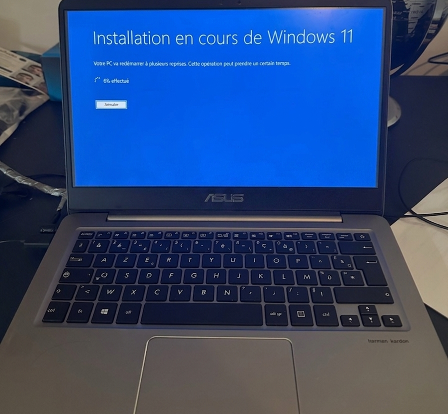
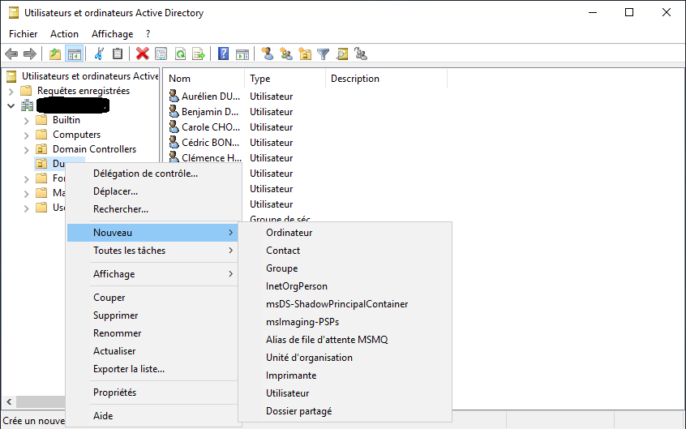
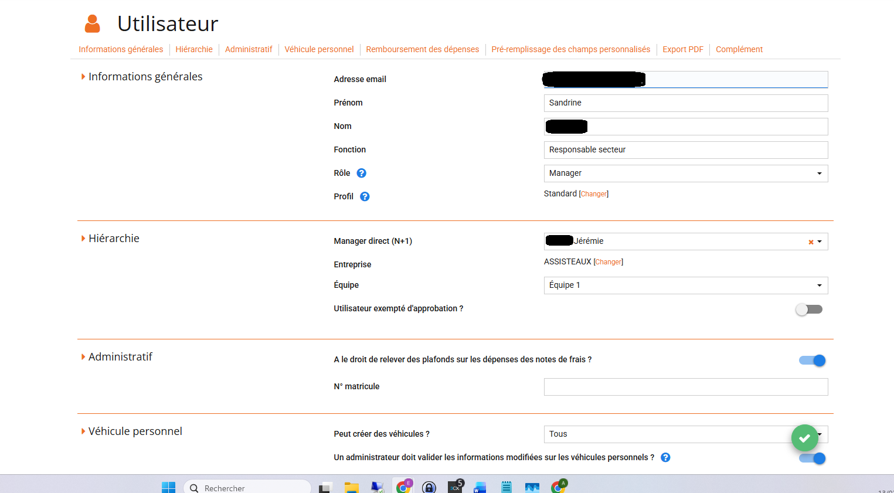
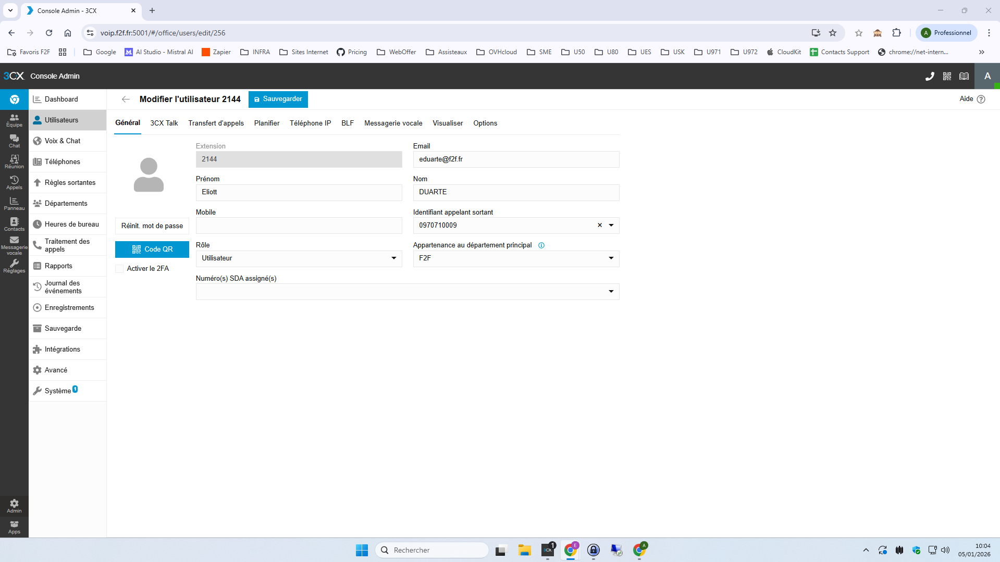
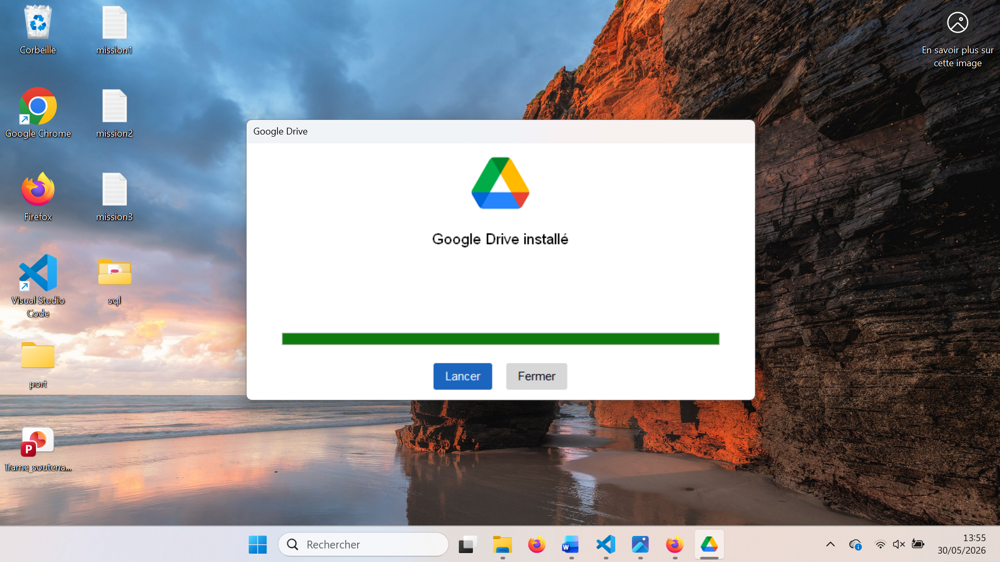
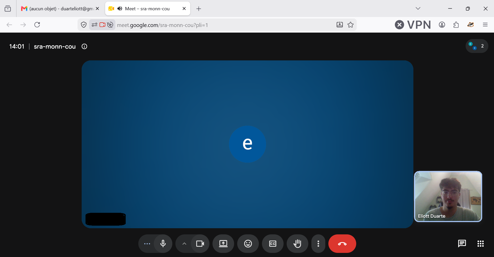

Accueil des nouveaux arrivants
1. Contexte & objectifs
L'arrivée d'un nouveau collaborateur au sein de F2F Groupe nécessite une préparation rigoureuse pour qu'il soit pleinement opérationnel dès son premier jour. L'objectif de cette mission est d'assurer un parcours d'intégration informatique complet : préparation du matériel adapté au poste, création des accès nécessaires, installation des logiciels métiers et formation aux outils internes.
Acteurs impliqués : RH (transmission des fiches d'arrivée), managers (définition des besoins métiers), Pôle ODOO SI.
Contraintes : délais d'intégration courts, diversité des profils (administratifs, terrain, commerciaux, production), hétérogénéité du matériel à fournir selon le poste (PC fixe, PC portable, smartphone et périphériques).
2. Tâches réalisées & évolution
- Étape 1 : Recueil du besoin : analyse du poste occupé et des besoin avec les RH et le manager (poste occupé, filiale, mobilité, outils métiers requis) pour définir le profil matériel et logiciel adapté.
- Étape 2 : Préparation du matériel : sélection et configuration du matériel adapté au poste : PC fixe ou portable, smartphone etpériphériques. Installation de Windows 11 professionnel.
- Étape 3 : Création des comptes & accès : création des accès (compte Windows / Active Directory), compte 3CX (téléphone IP), compte Google Workspace et accès drive partagé, accès aux applications métiers : Odoo (ERP), Praxedo (Planification), N2F (Notte de frais).
- Étape 4 : Installation des logiciels métiers : déploiement des applications adaptées au poste : navigateur (Chrome), suite bureautique (G-suit / Office), outils de téléphonie (3CX), et logiciels spécifiques metier.
- Étape 5 : Accueil & formation informatique : remise du matériel au nouvel arrivant, présentation de l'environnement de travail, formation aux outils (Suite google, 3CX et procédures de support).
- Étape 6 : Suivi post-intégration : complément en formation sur les différents outils, ajustement des accès et des logiciels métiers si nécessaire.
3. Compétences & apprentissages critiques mobilisés
Cette mission, récurrente tout au long de l'alternance, mobilise les compétences RT1 (administration de postes) et RT2 (communication avec les usagers).
RT1 Administrer les réseaux et l'Internet – Niveau 2
Justification : la préparation complète des postes (Windows 11, logiciels métiers, périphériques) m'amène à installer et configurer des postes clients adaptés à des besoins métiers variés, dans un cadre de production.
RT2 Connecter les entreprises et les usagers – Niveau 2
Justification : la formation initiale et l'accueil exigent un comportement de formateur : vulgariser les concepts techniques, adapter mon discours au profil du nouvel arrivant (administratif, terrain, direction).
4. Analyse réflexive & autoévaluation
Ce que j'ai appris : j'ai compris que l'accueil informatique d'un nouvel arrivant est un moment clé : il conditionne sa productivité, sa relation au SI et sa perception du service. J'ai appris à structurer un processus reproductible (checklist matériel, comptes, logiciels) tout en l'adaptant à chaque profil de poste.
Difficultés rencontrées : la principale difficulté tient à la diversité des besoins métiers (production, commerce, administratif) qui implique des combinaisons matérielles et logicielles très variées. Il faut aussi composer avec des délais parfois courts entre la confirmation d'embauche et la date d'arrivée effective, ainsi qu'avec la coordination entre RH, manager et SI.
Comment je les ai surmontées : Au fur et à mesure des arrivées, j'ai pu affiner mon processus d'intégration en m'adaptant aux besoins spécifiques de chaque profil grace a de nonbreu eahnge avec les RH, manageur et mon tuteur.
Positionnement personnel : je suis aujourd'hui presque autonome sur l'ensemble du parcours d'intégration informatique, la préparation du poste. Il me manque encore de l'expérience sur l'accompagnement de l'utilisateur.
5. Traces & preuves
Illustrations sélectionnées du processus d'accueil des nouveaux arrivants. Chaque trace illustre concrètement une étape clé du parcours d'intégration.

1. Préparation du matériel adapté : Installation Windows 11 professionnelle. Illustre AC11.04 (maîtriser les principes des systèmes d'exploitation) et AC11.06 (installation d'un poste client).



2. Création des accès Windows et applications métiers. Illustre AC11.06 (installation d'un poste client) et AC21.03 (déploiement de postes clients).

3. Installation des logiciels. Illustre AC11.06 (installation d'un poste client) et AC21.03 (déploiement de postes clients).

4. Formation d'integration. Ajustement des accès et compléments de formation selon les retours du nouvel arrivant.